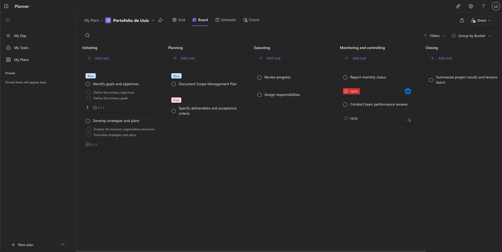
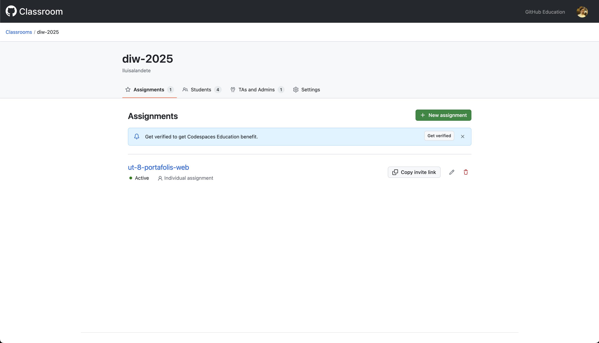
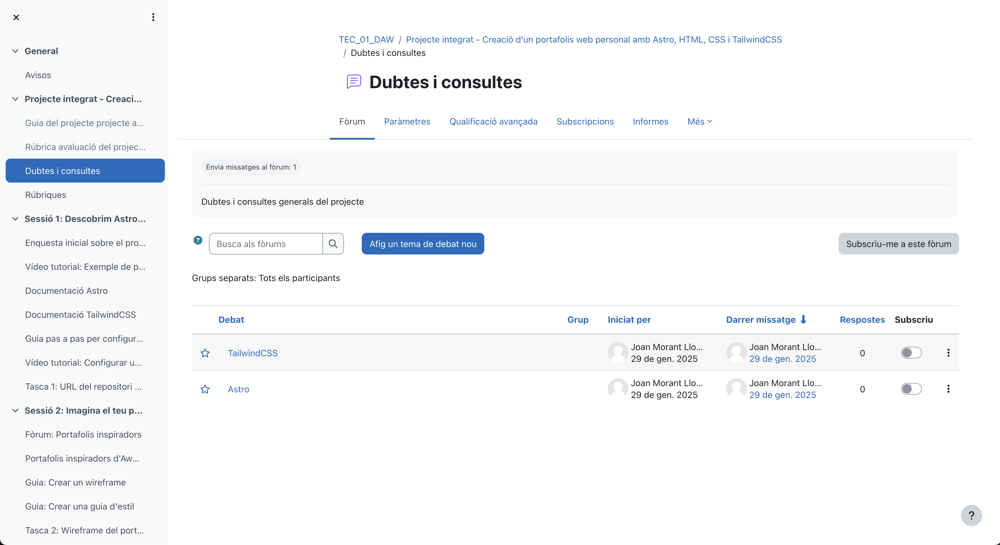

Recursos Generats pel Professor
Vídeos Tutorials
1. Sèrie "Portafolis Professional amb Astro"
Finalitat: Introducció i aprenentatge guiat
| Vídeo | Durada | Contingut |
|---|---|---|
| Exemple de portafolis fet amb Astro + Tailwind | 1h 45 min | Tutorial pas a pas per a configurar Astro |
| Taller de Figma per a desenvolupadors | 2h | Taller de com gastar Figma per a crear guia d'estil |
| Com utilitzar Responsively | 1 min | Com gastar Responsively per a visualitzar el portafolis en diferents dimensions |
| CSS Nesting Natiu | 1 min | Contingut propi explicant el concepte de nesting |
| Com utilitzar Lighthouse en Chrome | 1 min | Com generar els resultats per a optimitzar el portafolis |
| Desplegament AWS amb Docker | 2h | Tutorial com funciona AWS |
2. Píldores Formatives
Finalitat: Reforç i resolució de dubtes
- Documentació Astro
- Documentació TailwindCSS
- Git: Bones Pràctiques
- Lighthouse: Interpretació de Resultats
Presentacions Interactives
1. Material Introductori
Presentació Principal: Presentació: Projecte Portafolis Web
- Eina: Canva
- Finalitat: Motivació i contextualització inicial
- Contingut: Exemples inspiradors, mercat laboral, objectives
2. Guies Visuals
Guia d'Estil: Design System Exemple
- Eina: Figma
- Finalitat: Plantilla i referència visual
- Contingut: Colors, tipografies, components, espaciats
Infografies
- Eina: Adobe Illustrator
- Finalitat: Referència ràpida de conceptes clau
- Contingut:


Formularis d'Avaluació
1. Autoavaluació Setmanal
Enllaç: Formulari Reflexió
- Eina: Microsoft Forms
- Finalitat: Seguiment de l'aprenentatge
- Freqüència: Setmanal (divendres)
2. Coavaluació QA
Enllaç: Peer Review Form
- Eina: Microsoft Forms
- Finalitat: Feedback entre iguals estructurat
- Moments: Sessions 8 i 10
3. Enquesta de Satisfacció
Enllaç: Valoració del Projecte
- Eina: Microsoft Forms
- Finalitat: Millora contínua de la unitat
- Moment: Final del projecte
Materials Didàctics Originals
1. Plantilles de Codi
Repositori Base: Astro Starter Template
- Eina: GitHub Template Repository
- Finalitat: Accelerar l'inici del projecte
- Contingut: Estructura bàsica, configuració, exemples
2. Checklists Interactives
Checklist de Desenvolupament: Notion Checklist
- Eina: Notion
- Finalitat: Guia pas a pas i autoavaluació
- Sections: Planificació, desenvolupament, testing, desplegament
3. Guies Escrites
Guia Completa: Manual del Projecte
- Eina: Markdown + MkDocs
- Finalitat: Referència completa offline
- Contingut: Tots els aspectes tècnics i metodològics
Recursos Interactius
1. Simuladors i Demos
Demo Interactiva: Exemple Portafolis
- Eina: Astro + Docker + AWS ECS
- Finalitat: Model de referència
- Característiques: Codi obert, arquitectura cloud, comentaris explicatius
2. Jocs Educatius
Flexbox Froggy: Juga a Flexbox Froggy
- Eina: Joc interactiu web
- Finalitat: Practicar Flexbox CSS
- Moment: Introducció a layouts moderns
Grid Garden: Juga a Grid Garden
- Eina: Joc interactiu web
- Finalitat: Practicar CSS Grid
- Moment: Introducció a layouts moderns
3. Simuladors de Desplegament
Sandbox Environment: Codepen Exemple
- Eina: Codepen
- Finalitat: Proves ràpides sense configuració local
- Ús: Debugging, experimentació
Eines de Seguiment
1. Dashboard Gestió de tasques
 Plataforma: Microsoft Planner
- Finalitat: Seguiment del progrés individual i grupal
- Mètriques: Tasques completades, temps invertit, qualitat
2. Repositori de Recursos
 Organització: GitHub Classroom
- Finalitat: Gestió centralitzada de projectes
- Funcions: Assignació automàtica, feedback inline, notes
3. Comunicació
 Canal Principal: Fòrum Moodle "DIW - Portafolis"
- Finalitat: Resolució de dubtes i debat col·laboratiu
- Seccions: General, Suport Tècnic, Mostra de Treballs, Recursos